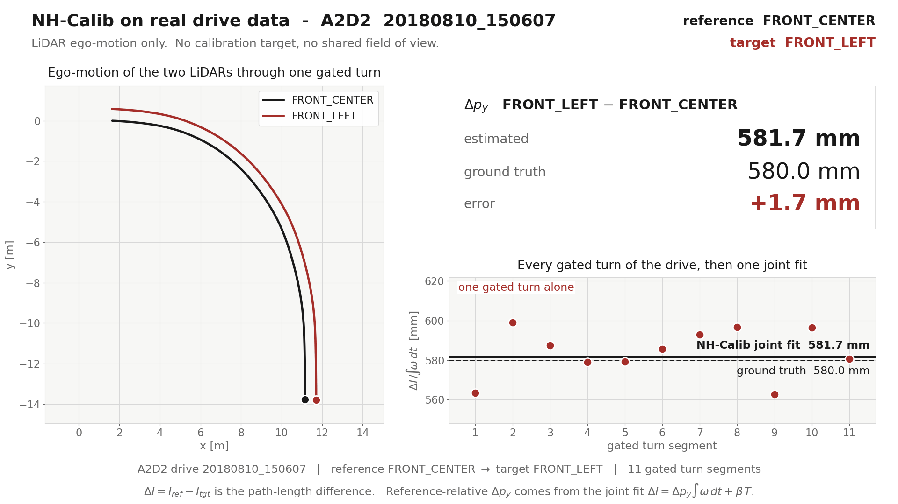
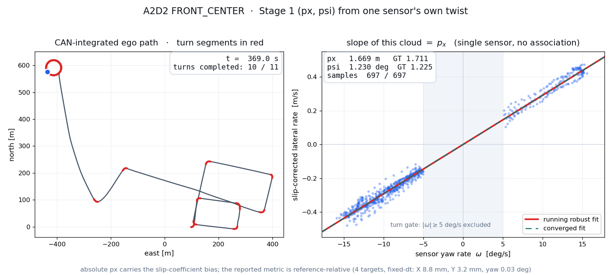

No target, no calibration site
Wheeled-vehicle motion is the reference. Any log containing ordinary turns carries the information the estimator needs, so a mount change costs a drive rather than a booked facility.


Research project · manuscript in preparation
Affiliations withheld during review
Sensors mounted on one vehicle rarely share a field of view or a modality, and mounts drift after maintenance. Three constraints decide whether a calibration method can run on such a platform at all.
| Approach | Runs without a target | Runs without shared field of view | Parameters coupled to inter-sensor time alignment |
|---|---|---|---|
| Target-based | ✗ prepared board or marker | ✗ target must be co-visible | — static capture |
| Registration / overlap | ✓ | ✗ needs co-visible structure | ● maps are built from timed motion |
| Hand–eye / trajectory | ✓ | ✓ | ✗ all six, through trajectory matching |
| NH-Calib | ✓ any turning drive | ✓ no common scene | ✓ one of five observable, relative Y only |
Columns state what a method requires of the platform, not its accuracy. Baseline accuracy under the same driving data is reported on the wiki results page.
Wheeled-vehicle motion is the reference. Any log containing ordinary turns carries the information the estimator needs, so a mount change costs a drive rather than a booked facility.
Sensors are related through the chassis they are bolted to, not through a scene they both observe. Front and rear LiDARs, or LiDAR against radar, are handled the same way.

X, roll, pitch and yaw come from each sensor’s own twist, so they never cross a clock boundary. Relative Y is the single parameter estimated across sensors, and the only one that inherits the alignment error.
Alignment stays a method-neutral preprocessing step: this counts how many parameters depend on it, and is not a claim of robustness to bad synchronization.

Derivation and measured sensitivity: observability · time alignment.
Extrinsic calibration is difficult when vehicle-mounted sensors share neither a field of view nor a sensing modality. NH-Calib takes metric ego-motion as its only input and uses wheeled-vehicle motion constraints to split the problem by observability: each sensor recovers X, roll, pitch and yaw on its own, and only relative Y is estimated across sensors, from associated turning segments. It is evaluated on LiDAR and radar configurations of A2D2, RadarScenes and Ford Multi-AV, with ground-truth extrinsics used for evaluation only.
A common metric-twist interface admits LiDAR or radar odometry, GNSS/INS, and wheel-speed with IMU. The estimator then separates what one sensor can answer alone from what needs a second sensor.

![Three panels. Left, a vehicle driving a circle on a locally planar patch of ground, with the rotation axis drawn along the plane normal. Middle, the same vector seen in the frame of a sensor mounted with a tilt: pooled angular-rate samples from the gated turns cluster around a direction off the sensor's vertical axis and split into an in-plane part and a vertical part. Right, the rotation that swings that direction back onto the sensor's vertical; its roll and pitch are the mounting angles, while a turn about the axis itself changes nothing, so yaw is left open.](assets/hero/hero_rollpitch_static.svg)
Levelling leaves a planar twist stream in the sensor's own frame, and the rest of Stage 1 reads the two in-plane parameters straight off it:
![Two panels. Left, a vehicle running straight: the axle point has no lateral velocity, so the sensor's lateral reading is its own yaw misalignment, drawn as the velocity resolved on the sensor's rotated axes. Right, the same vehicle in a steady turn about an instantaneous centre of rotation, where the sensor gains a lateral velocity equal to the turn rate times its longitudinal lever arm. Below, lateral velocity plotted against turn rate: straight frames on the origin, turning frames on a line whose slope is the lever arm.](assets/hero/hero_pxyaw_static.svg)
The same mechanism on the real drive. Nothing below is drawn by hand: the cloud is what Stage 1 actually consumed, and the moving line is the same robust fit the estimator runs.

Stage 2 takes the pair. Each sensor now reports its own motion in the vehicle frame, and the one thing a single sensor cannot see — how far apart the two are across the vehicle — falls out of the same turns:

One reference sensor is fixed per dataset and every remaining sensor is scored once against it. The metric is the mean absolute error of the reference-relative extrinsics over those target sensors, in millimetres and degrees; ground truth is the extrinsic set shipped with each dataset.
| Dataset | Reference | Targets | X | Y | Yaw | Roll | Pitch |
|---|---|---|---|---|---|---|---|
| A2D2 | FRONT_CENTER | 4 | 8.45 mm | 3.21 mm | 0.072° | 0.262° | 0.239° |
| RadarScenes | RADAR_1 | 3 | 8.28 mm | 16.48 mm | 0.090° | — | — |
| Ford Multi-AV, Log 4 | RED | 3 | 42.99 mm | 35.65 mm | 0.195° | 0.341° | 1.675° |
| Ford Multi-AV, Log 5 | RED | 3 | 6.87 mm | 18.07 mm | 0.106° | 0.196° | 0.483° |
| Ford Multi-AV, Log 6 | RED | 3 | 35.60 mm | 7.41 mm | 0.144° | 0.226° | 0.868° |
NH-Calib only. RadarScenes is two-dimensional, so roll and pitch are not evaluated there. The hand–eye and registration baselines under the same protocol, the per-sensor breakdown and the ablations are on the wiki results page.
Where each of these shows up in practice: failure modes.
@misc{nhcalib2027,
title = {NH-Calib: Self-Calibration of Sensor Extrinsics
under Wheeled-Mobility Motion Constraints},
author = {Anonymous},
year = {2027},
note = {Manuscript in preparation}
}